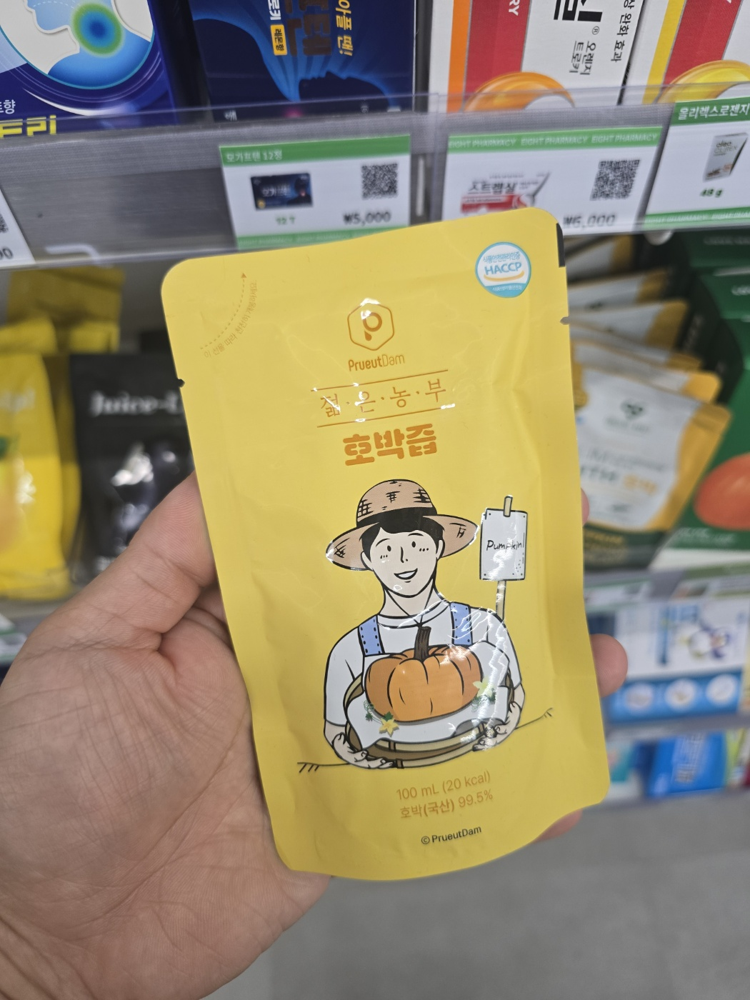
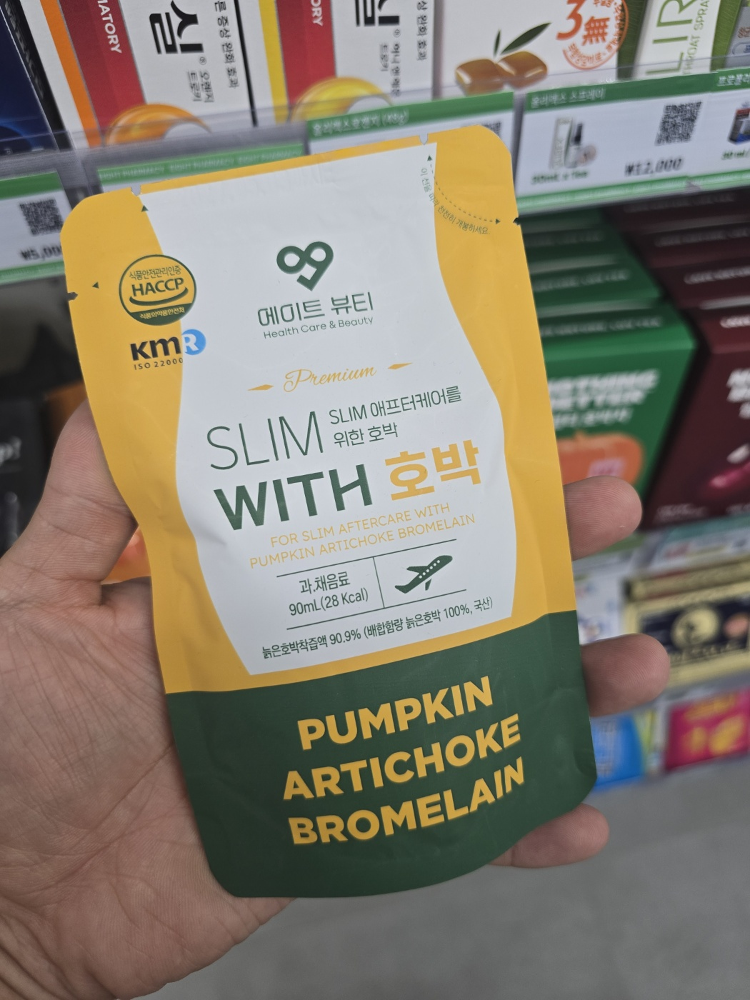
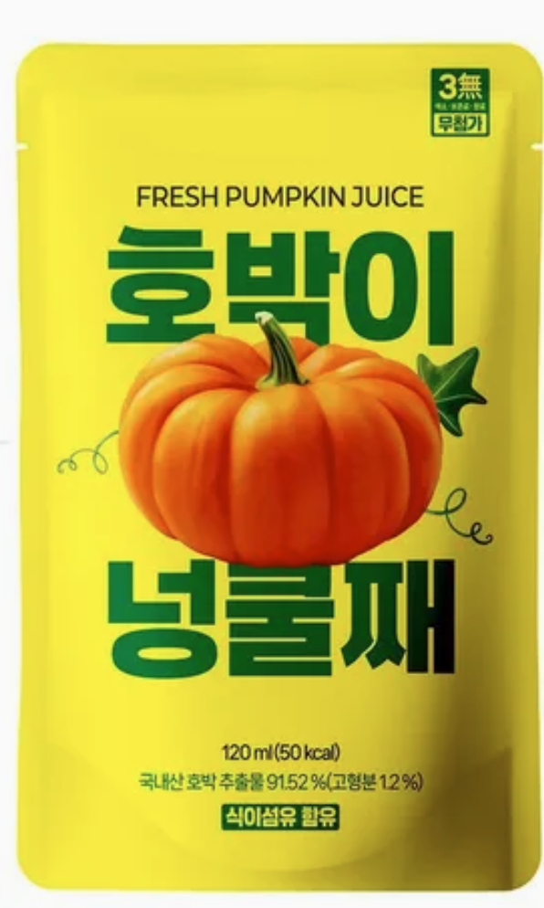
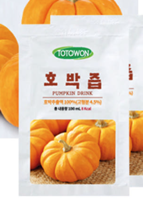
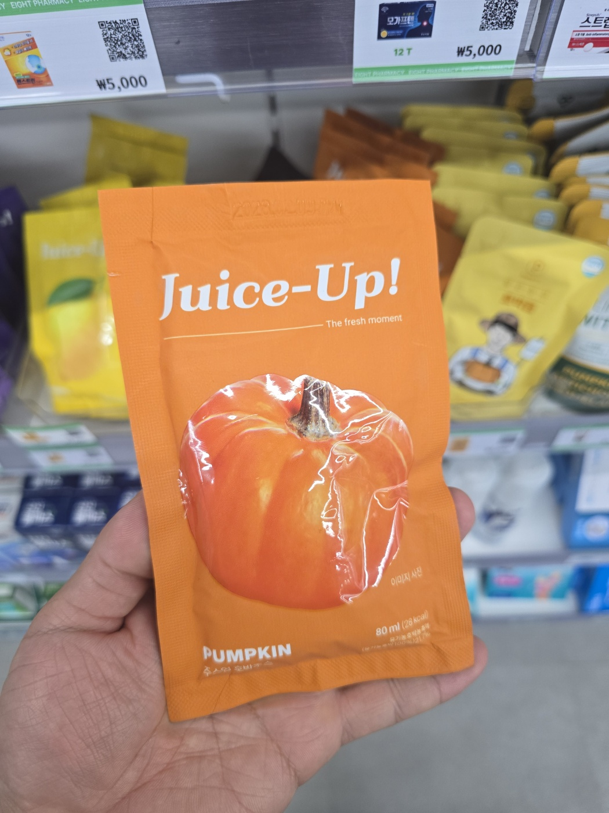
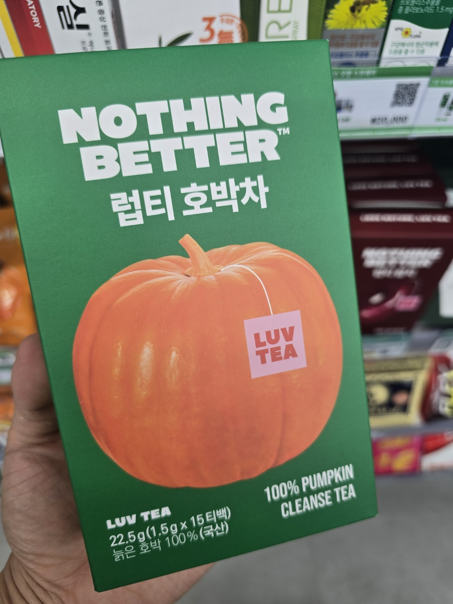

Top 6 Pumpkin Drinks Sold at Korean Pharmacies 🎃

Made with 99.5% Korean pumpkin — essentially pure pumpkin. Has a naturally sweet, porridge-like flavour. Perfect for those who prioritise taste☺

Korean aged pumpkin blended with artichoke and Bromelain enzyme, specially formulated to reduce bloating. A pharmacy bestseller in a convenient 90 mL pouch.

Korean pumpkin pressed with the skin on for a full, authentic flavour. Sweetened naturally with organic sugar and apple concentrate — smooth and easy to drink.

Whole Korean aged pumpkin — skin to seeds — cold-pressed with zero additives. The purest pumpkin taste in the lineup, and the lowest in sweetness.

Made from German organic pumpkin with added probiotics. The lightest, most refreshing of the six — almost water-like. Great for first-timers.

100% Korean aged pumpkin — but in tea bag form, not juice. Just steep in 500 mL of hot water. Ideal for those who prefer a warm drink.